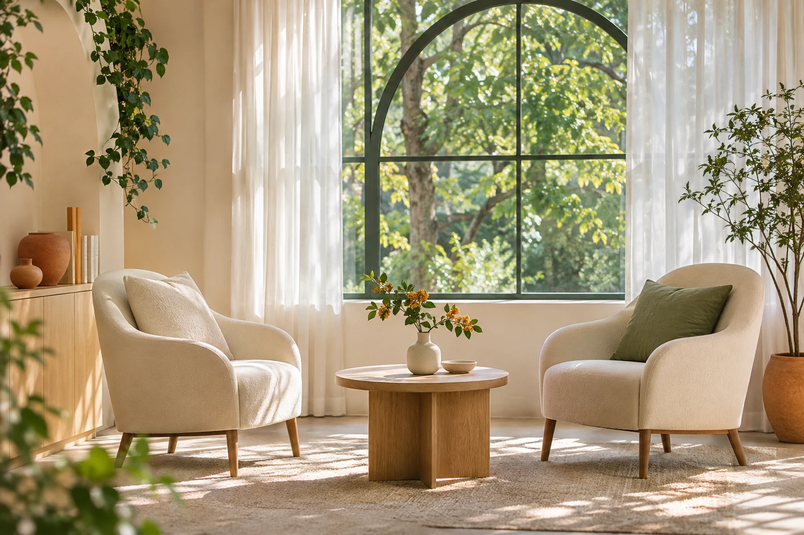

프로그램 살펴보기
상담·교육·체험에서 관심 있는 분야와 참여 대상, 담당자를 확인합니다.
YOUR FIRST STEP
프로그램부터 일정, 신청 방법까지 한눈에 살펴보세요.
HOW TO BEGIN
상담·교육·체험에서 관심 있는 분야와 참여 대상, 담당자를 확인합니다.
상세 페이지에서 12월 운영 일정, 진행 시간과 비용을 비교합니다.
신청 내용을 확인하면 신청서 번호가 표시됩니다. 실제 예약이나 결제는 발생하지 않습니다.
관심 분야와 참여 대상을 살펴보고, 프로그램별 안내에서 일정과 준비물을 확인해 주세요.
FREQUENT QUESTIONS
아동·청소년, 성인, 부부, 가족을 위한 심리상담과 다중지능·인성·독서지도·영어교육, 요가·공예·미술놀이 등 다양한 체험을 소개합니다.
아동·청소년 상담은 50분 60,000원, 성인상담은 50분 70,000원, 부부상담은 80분 120,000원, 가족상담은 90분 150,000원으로 구성되어 있습니다. 프로그램별 안내에서 대상과 시간을 함께 확인해 주세요.
관심 있는 프로그램의 상세 페이지에서 신청 화면으로 이동해 분야와 일정, 연락처를 작성해 주세요. 작성한 내용을 확인하고 파일로 저장할 수 있습니다.
초등학생과 보호자를 위한 다중지능교육, 아기와 보호자를 위한 베이비 마사지, 4–7세 아이와 보호자를 위한 미술놀이가 있습니다. 상세 페이지에서 참여 대상을 확인해 주세요.
일반회원은 만 19세 이상이며 연회비는 30,000원입니다. 월 1회 독서·대화 모임과 분기 1회 창작 모임을 함께합니다.
프로그램별 대상, 일정, 진행 시간, 장소와 준비물을 확인해 주세요. 처음 참여하신다면 궁금한 점을 간단히 정리해 보셔도 좋습니다.
함께하는 사람들 페이지에서 강사진의 담당 분야와 프로그램을 살펴볼 수 있습니다.
VISIT & CONTACT
나무구 마음로 12
모먼트리빌딩 3층

나무역 2번 출구 도보 5분 · 건물 뒤편 주차 2시간 무료로 설정한 안내입니다.
YOUR NEXT MOMENT
상담과 배움, 다양한 경험을 통해 새로운 시작을 함께합니다.